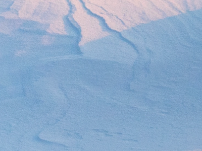

Kins Display is a font
developed and designed
by Evelina Falander
This display font was created with inspiration from calligraphy and tribal style and it was developed using illustrator and photoshop.
The creation process was initially limited to a week and the font is therefore still in its creation process with some letters of the alphabet yet to be released.